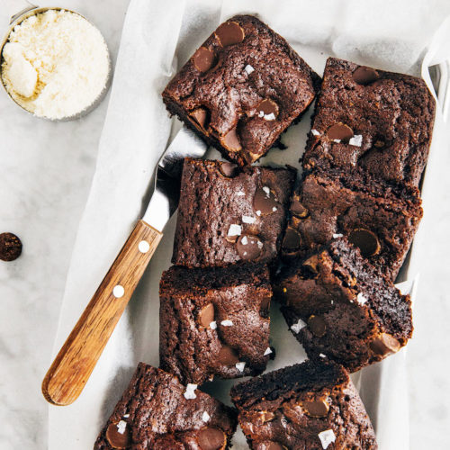

Brownies

Description
This is my absolute favorite brownie recipe. They are rich,
fudgy in the middle, and made completely from scratch.
These brownies are so much better than the box, and I bet you
have what you need to make them already sitting in your kitchen.
I love brownies that are rich and extra chocolatey.
These brownies with dense, fudgy middles and crinkly tops absolutely deliver!
Ingredients for Brownies
- 1/2 cup Butter
- 1 cup White Sugar
- 2 Eggs
- 1 teaspoon Vanilla Extract
- 1/3 cup Unseetened Cocoa Powder
- 1/2 cup all-purpose flour
- 1/4 teaspoon Salt
- 1/4 teaspoon Baking Powder
Ingredients for Frosting
- 3 tablespoons Softened Butter
- 3 tablespoons Unsweetened Cocoa Powder
- 1 tablespoon Honey
- 1 teaspoon Vanilla Extract
- 1 Cup Confectioners' Sugar
Steps
- Preheat oven to 350 degrees F (175 degrees C). Grease and flour an 8-inch square pan.
- In a large saucepan, melt 1/2 cup butter. Remove from heat, and stir in sugar, eggs, and 1 teaspoon vanilla. Beat in 1/3 cup cocoa, 1/2 cup flour, salt, and baking powder. Spread batter into prepared pan.
- Bake in preheated oven for 25 to 30 minutes. Do not overcook.
- Remove brownies from the oven, and make frosting. Combine 3 tablespoons softened butter, 3 tablespoons cocoa, honey, 1 teaspoon vanilla extract, and 1 cup confectioners' sugar. Stir until smooth.
- Frost brownies while they are still warm.